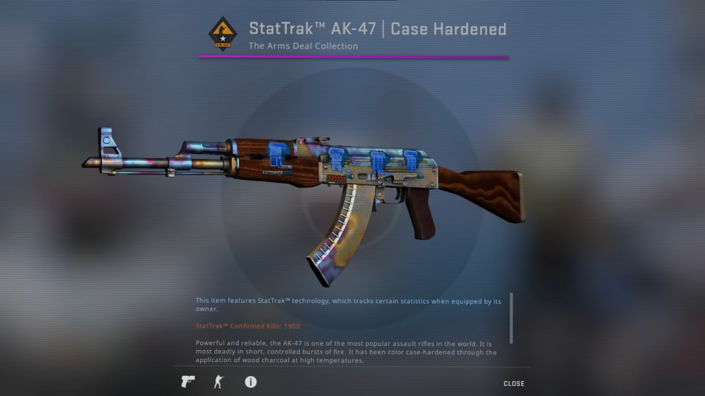

About CS:GO
Counter-Strike: Global Offensive (CS:GO) is a 2012 multiplayer tactical first-person shooter developed by Valve
and Hidden Path Entertainment.
It is the fourth game in the Counter-Strike series, developed for over two
years.
Valve still regularly updates the game, both with smaller balancing patches and larger content additions.
Game Maps
See all matchpool maps
Dust 2
One of the most popular maps in the Counter-Strike series due to its strong balance, Dust II is an iconic map
for the Counter-Strike franchise.
It is widely played on many servers and is a popular choice for Counter-Strike tournaments as well.

View Full Map
Mirage
Mirage, formerly known as Strike, is a Bomb Defusal map. The map was added to the game on June 6, 2013.

View Full Map
Inferno
Created by Chris "Barney" Auty, the Inferno map was originally an abandoned residence set during the
evening.
During Counter-Strike 1.6, Valved edited the map to change it to a village setting and when CS: Source
came around the map changed forever. The theme has changed from the abandoned residence it once was.

View Full Map
Skins
The 3 most expensive skins
The second most expensive skin is..
Stattrack Ak-47 | Case Hardened Blue Gem with 4x Titan Holos
